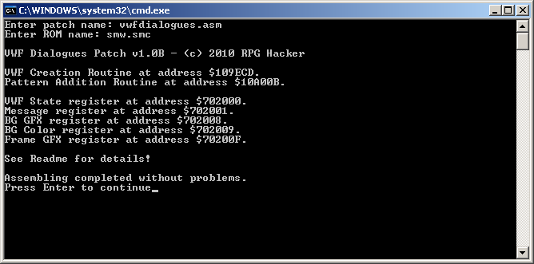
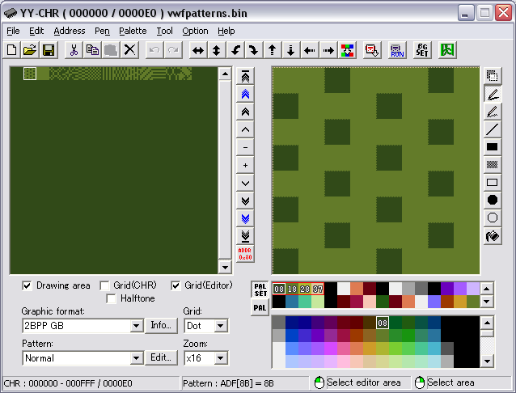
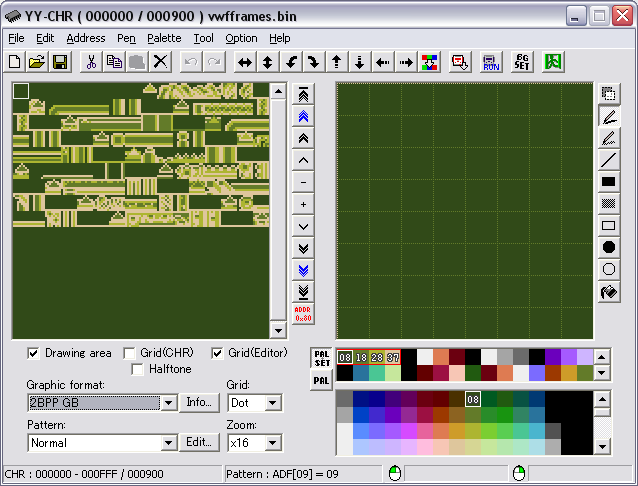
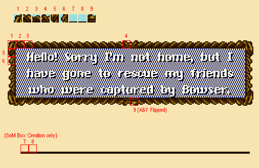
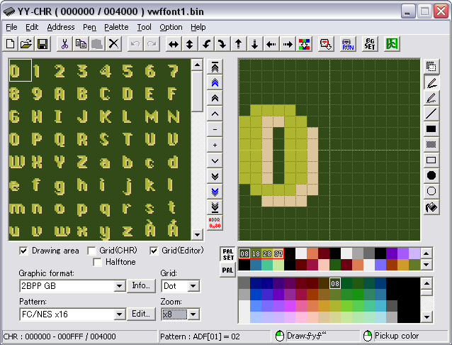
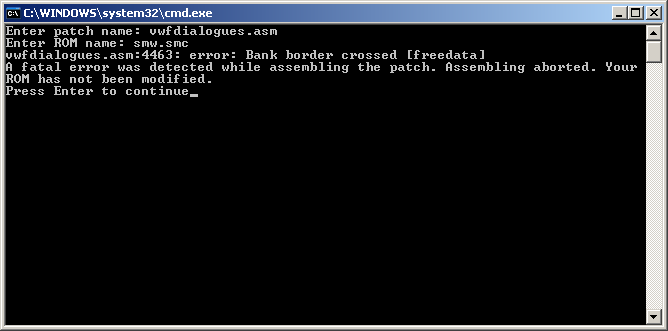

Welcome to the VWF Dialogues Patch! Since you got here by yourself you most likely already know what this patch does, but let me give you a general overview anyways.
The aim of this patch is to give a useful alternative to SMW's native text boxes. Unlike Romi's VWF Cutscene Tool (which is great, btw.) this patch is set up for easy event creation, easy customization and compatibility with all kinds of languages. The cost of this is a way harder usage. However, as long as you're somewhat familiar with custom sprites/custom blocks and Asar patches and read this Readme carefully you should be fine.
I've also included a custom block that utilizes this patch. I wanted to include more blocks and also a few custom sprites, but I figured that any custom block or custom sprite from SMW Central which displays a level message is compatible with this if you enable the Message Box Hijack (see section 2). I might add a few customized sprites and blocks in a future version. The one block I included gives a general idea on how to utilize this patch, though. Additionally I've included a few alternative fonts if you don't like the default one. The default font has the most characters, though. If you're using any language that is not English and has some special characters you might have to draw them yourself.
Be aware that this patch does some modifications to the ROM that might seem to be unrelated to the patch itself and aren't mentioned anywhere in this Readme. For example: It automatically expands the SRAM of your ROM to 128 KB since it needs over 32 KB of free RAM during dialogues.
Anyways, let's get started now with the first steps to setting up the patch now.
The very first thing you'll have to do is take the files vwf_dialogues.asm, vwfmessagepointers.asm, vwfmessages1.asm, vwffont1.bin, vwffont1.asm, vwfpatterns.bin, vwfframes.bin and vwftable.txt and copy them over to your Asar folder. Next you open up "vwf_dialogues.cfg" in a text editor of your choice.
Here you'll see the defines !varram, !backupram, !tileram, !varramSA1, !backupramSA1, !tileramSA1. I suggest you don't touch those at all, especially if you aren't too familiar with ASM. Those addresses are the SRAM locations the patch uses (the defines with an SA1 prefix are for SA-1-enabled ROMs). Of course you can also change them to RAM addresses, but to do that you will likely have to apply additional patches to free up RAM in SMW. If you decide to do so, you can set the !patch_sram_expansion define further down in the cfg file to !false to prevent this patch from automatically expanding your SRAM. Normally you don't have to bother, though, as the patch's default settings should work just fine for most hacks. I tried to use addresses at the very end of the game's SRAM area in an attempt to prevent potential conflicts with other patches.
Scroll further down for a group of defines that determine the default settings of your text boxes. "!defbg" is the graphic from the file "vwfpatterns.bin" to use as the default text box background. More details on the format of each bin-file later on. Everything you have to know for now is that this number is in hex and by default you can use any number from $00 to $0D.
Next on the list is "!bgcolor", the default color of the text box background in SNES RGB format. To find out what a color is in SNES RGB format simply open the palette editor in Lunar Magic and move the cursor over whatever color you're looking for. Lunar Magic will display the value of that color in various formats, including the SNES RGB format.
"!defframe" is the group of graphics from the file "vwfframes.bin" to use as the default text box frame. More on this later. By default $00 to $0F are valid.
The define "!framepalette" sets up which palette to use for the frame of the text box. This can not be changed ingame. Since we're using Layer 3 for our dialogues only the first two rows of the palette in Lunar Magic can be used for this. Each Layer 3 palette uses four colors. For example: $00 uses the first four colors, $01 the next four colors etc. Since the first two rows together have 32 colors this means you have the choice between 8 different palettes. In other words: $00 to $07 are valid inputs here. One thing is very important, though: During dialogue processing the colors in that palette get overwritten by new colors, so never use a palette that is used by the level background. I recommend using a palette which is only used by the status bar, since the status bar is invisible during dialogues. You don't have to worry here: My patch restores all 32 original colors of the first two rows of the palette after the dialogue is done, so any palette that is used only for the status bar is save to use here.
Next is the define "!bitmode". With this define you set up the bitmode of the patch. Put in a 0 for 8-Bit-Mode and a 1 for 16-Bit-Mode. In 16-Bit-Mode each letter in your dialogues takes up double the space, but the high byte is always treated as the font to use. In other words: $01FF would be "Font $01, Character $FF". I figured this might be useful for complex languages like Japanese or something. Then again as long as most of the used characters are inside the same font file it is recommended to continue using 8-Bit-Mode. For anyone not using a complex language it is anyways. More details on this will be given whereever 16-Bit-Mode has an effect.
The next define is "!hijackbox" and determines whether you want to hijack SMW's original message boxes or not. Put a 0 here if you don't want to lose the original SMW message boxes. In this case this patch can still be used with custom sprites or custom blocks. Put a 1 here to hijack SMW's message boxes to automatically use this patch. In this case you can never use SMW's original message boxes again, though. Editing the message boxes in the Lunar Magic Overworld Editor also won't have any effect anymore since the messages will use the text from this patch instead. More details on editing the text in the next section. I highly recommend installing this hijack btw., because if you do you can use $7E1426 the same way as in original SMW. In other words: Setting it to $01 will display message 1 from the current level, setting it to $02 will display message 2 from the level and setting it to $03 will display the Yoshi thanks message. Also you can use ANY sprite from the custom sprites section and ANY block from the custom blocks section on SMW Central with a message displaying related function to display the dialogues from this patch instead. This can be really useful, considering I've barely included any custom sprites or blocks.
As mentioned further above, you can change the !patch_sram_expansion define in the cfg file to !false to prevent this patch from applying its automatic SRAM expansion. Normally you don't have to do this, but there may be situations where advanced users want to use RAM as working memory instead of SRAM, in which case the SRAM expansion won't be needed and can be disabled.
After you're done with setting up all the defines, save the file and patch it to your ROM with Asar. Make sure only to patch "vwf_dialogues.asm" and nothing else. You should get a window that looks somewhat like this:  If that's what you see you've applied the patch successfully. I'll explain all of those lines in detail later on.
In this section I will explain how to create and display dialogues, how to edit and add new graphics (including fonts) and how to use this patch's features for your own patches.
The first and easiest thing you'll have to learn is how all the different graphic formats this patch uses work. Among them are the following ones:
Let's start with background graphics, the easiest format. Open the file "vwfpatterns.bin" in your
tile editor and set it to 2BPP GB. You should get a window similiar to this:

As I said this format is pretty easy. You only have to rules to follow:
1. One 8x8 tile = One BG pattern.
2. Only use the second color of the palette for BG patterns.
That's all there is to it. If you want to add more graphics simply put them into the empty space next
to the last graphic. Make sure to expand the bin-file by at least 16 bytes before you do thit, though.
You can use Translhextion for this. Otherwise your new graphic won't get saved.
Next up are frame graphics. Open up "vwfframes.bin" in your tile editor and set it to 2BPP GB. You should see something like this:  Now frame graphics are a little bit more complicated in that way that each frame set consits of nine 8x8 tiles this time. Here is how they're used:  As you can see tiles 1 to 6 of each set form the actual frame. The tiles may be X and Y flipped to get the according parts of the text box. Tiles 7 and 8 are not used by the actual text box, but rather for the creation of the text box and only if you use the the creation style of Secret of Mana. More on this later. Tile 9 is the blinking cursor that is displayed when the game is waiting for the player to press the A button. It is X and Y flipped, so consider this when you're drawing this. Luckily X- and Y-flipping each is just one click in YY-CHR. Also for frames you can use all colors of the palette. Just like with background graphics you'll have the expand the bin-file before you can add more graphics, this time by at least 144 bytes.
Another thing you have to do for frames is setting up palettes for each frame set. Specifially you
have to set up the second, third and fourth color of the frame palette declared in "vwf_dialogues.asm"
in section 2 of this Readme. To find the table containing the palettes open up "vwf_dialogues.asm", hit
CTRL + F and search for "CUSTOMTABLES". You'll get to a section with two different tables of which one
table, called "Palettes:", is the table we're looking for. It looks somewhat like this:
dw $0000,$FFFF,$0000
dw $0A56,$04ED,$0044
dw $45ED,$24E6,$0C41
dw $477D,$2E55,$214D
[...]
Font graphics are the most complicated of all the graphic formats. First of all open up "vwffont1.bin" in
YY-CHR and set it to 2BBP GB. Now you'll notice that the letters are all messed up and it's nearly impossible
to edit them that way. Well, this is where YY-CHR v0.99 comes in handy. At the bottom it has a field labeled
"Pattern:". Simply select "FC/NES x16" here and the letters will be in the correct format. This is what
it looks like:

Each 16x16 tile is one character. Each font can have up to 256 characters. That's four pages in YY-CHR.
Just like BG patterns, fonts have their special rules.
1. Only use the third and fourth color of the palette for fonts.
2. Make each letter touch the left border of it's 16x16 tile. This is important for the VWF system.
Everything else here is pretty simple. Just draw the hell out of yourself. I recommend using the third
color for the letters and the fourth color for their shading (if using any that is).
Next thing is the width table. Open "vwffont1.asm". As you can see the width table file and the actual font
file share the same file name. This is not required, but recommended. You'll see something like this now:
;Char00to0F:
db $07,$07,$07,$07,$07,$07,$07,$07,$07,$07,$07,$07,$07,$07,$06,$06
;Char10to1F:
db $07,$07,$05,$07,$08,$06,$09,$08,$07,$07,$07,$07,$06,$07,$07,$07
;Char20to2F:
db $0B,$07,$07,$07,$07,$07,$06,$07,$07,$06,$07,$07,$03,$06,$07,$03
[...]To create a new font file, simply copy "vwffont1.bin" and "vwffont1.asm", rename them accordingly and edit them. To insert this new font into your game, press CTRL + F inside "vwf_dialogues.asm", search for "INSERT DATA HERE!" and paste the following code just below it
%nextbank()
%binary(Font2, "vwffont2.bin")
%source(Font2_Width, "vwffont2.asm")dl Font1,Font1_WidthFonttable:
dl Font1,Font1_Width
dl Font2,Font2_Width
So now to actually use my patch and display some text on the screen. Remember this window from
applying the patch to your ROM?
This is the first time it actually plays a role. Now if you're not familiar with ASM at all or don't
plan on using this patch in your own patches, custom sprites or custom blocks then this won't be
very interesting for you. For everyone else here is the general procedure of how to start a dialogue
ingame using this patch:
rep #$20
lda.w #$002D
sta.l $727E01
sep #$20
lda.l $727E00
bne .SkipDialogue
lda #$01
sta.l $727E00
.SkipDialogue
Whenever a dialogue is currently active, the Status Bar and the level's Layer 3 are hidden. They'll
return at the end of the dialogue. I still recommend not using dialogues in Layer 3 levels.
Alright. Let's move on. By now you're probably wondering what that number we have written to the
Message register corresponds to. Well, open the file "vwfmessagepointers.asm" and find out. You'll see
something like this:
dl Message0000,Message0001,Message0002,Message0003,Message0004
dl Message0005,Message0006,Message0007,Message0008,Message0009
dl Message000A,Message000B,Message000C,Message000D,Message000E
dl Message000F,Message0010,Message0011,Message0012,Message0013
[...]dl Message0000, $7F0000, Message0002, Message0003, $05A5D9 dl Message0005, Message0006, Randomname1, Message0008, Message0009 dl Message000A, Randomname2, $268000, Message000D, Message000E dl Message000F, MessageABCD, Message0011, Message0012, Message0000
[...]Open "vwfmessages1.asm". As you can see labels for each label in the table are already in here. Most of them are ununsed and can be used by yourself. If you chose to replace SMW's original messages by this patch in section 2 then the comments at the end of each label also tell you which original message the according labels are replacing. "Message0009:" replaces SMW's original message 004-2 for example. To edit a dialogue simply put text under the according label. To add new ones simply paste them at the end of the file, but ABOVE "%textend()". This is important to prevent glitches. After we're done with this we can finally get to actually write messages. YAY!
The first thing to do when setting up a dialogue is creating a header for it. This header is mandatory;
not having it will cause glitches in the game. It allows you to easily set up position, width, height
and other settings of the text box during that one specific dialogue. Let's say we wanted to edit
Message0005. The first thing I always do is adding .header- and .body-sublables to each message.
Sublables are a special kind of labels in Asar which can be reused inside the same patch, as long as
they're not used under the same main label. The main label in this case would be "Message0005:". After
adding sublabels we'd have:
Message0005: ; Message 002-2
.header
.bodyMessage0005: ; Message 002-2
.header
db $aa
db %bbbbbccc,%ccddddee,%eeffffgg,%gghhhhhh,$ii,%jjjj----
dw $kkkk,$llll
db %mnnnop-q
db %rrssttuu,$vv,$ww,$xx,$yy
.bodyaabbbbbcccccddddeeeeffffgggghhhhhh000000 here (for the fastest text speed).
ii00 | Instantly clear the text box and continue. |
|---|---|
01 | Wait for the player to press the A button. |
02-FF | Wait that many frames. |
jjjj0000 | Don't use a text box. |
|---|---|
0001 | Secret of Evermore style. Expand box from top to bottom. |
0010 | Secret of Mana style. Expand box from the middle. |
0011 | Mega Man Zero style. Expand box from left to right. |
0100 | Instantly show complete box. |
kkkkllllm0 | Don't freeze sprites. |
|---|---|
1 | Freeze sprites. |
nnno0 | Regular layout. |
|---|---|
1 | Centered layout. |
p0 | Don't allow speedup. |
|---|---|
1 | Allow speedup. |
q0 | Don't disable. |
|---|---|
1 | Disable. |
rr00 | $1DF9 |
|---|---|
01 | $1DFA |
10 | $1DFB (Not recommended to use) |
11 | $1DFC |
ssrr, but for the "waiting for A button" sound effect.
ttrr, but for the cursor sound effect.
uurr but for the "pressed A" sound effect.
vvwwvv, but for the "waiting for A button" sound effect.
xxvv, but for the cursor sound effect.
yyvv, but for the "pressed A" sound effect.WHEW! After being done with the header you'll now finally get to really, really, really write some text for your dialogues.
So if you're using the same labels as I suggested in this Readme then what you're going to edit now is the part under the ".body"-sublabel, which is the actual dialogue.
db $03,$AF,$34,$CD,$A3,$5B
[...]dw $0003,$00AF,$0034,$01CD,$00A3,$025B
[...]Font $00 | – Charcter $03 |
|---|---|
Font $00 | – Charcter $AF |
Font $00 | – Charcter $34 |
Font $01 | – Charcter $CD |
| |
db "Hi there! Put some text here!"db "Text 1 ",$34,"Text 2"db "Hello there!"
db "Pi ",$35," 3.141..." ; The $35 here could be an equal sign or something
db $03,$40,$AF,"More text!"
db $AB,$54,$DF
[...]$FF - End Dialogue$FE - Space$FD - Force Line Break$FC - Set Message Numberdb $FC
dw $XXXX$FB - Modify Text Pointerdb $FB
dl Addressdb "Hey you!",$FD,$FB
dl .part2
db "Bla bla bla..."
.part2
db "What are you doing there?"db "Bla "
.loop
db "bla ",$FB
dl .loop$FA - Wait for A Buttondb "I like you a lot... ",$FA
db "NOOOT!",$FA,$FF$F9 - Wait for $XX frames$XX frames. Usage is like this:db $F9,$XX$F8 - Change Text Speeddb $F8,$XX$F7 - Display Decimal Numberdb $F7
dl Address
db $BZdb $F7
dl $7E0DBF
db $01$F6 - Display Hexadecimal Numberdb $F6
dl Address$F5 - Display RAM Characterdb $F5
dl Address$F4 - Display Character; 8-Bit-Mode
db $F4,$XX
; 16-Bit-Mode
dw $FFF4,$XXXX$F3 - Change Text Palettedb $F3,%-----XXX$F2 - Change Fontdb $F2,$XX$F1 - Execute Codedb $F1
dl Address.body
db "Here you go!",$F1
dl .checkcoins
db " Thank you very much!",$FA,$FF
.notenough
db " Wait, you don't even have enough coins!",$FA,$FF
.checkcoins
!number = #$28 !address = $0DBF !destination = .notenough
lda !address
cmp !number
bcc .changepointer
sec
sbc !number
sta !address
rtl
.changepointer
lda.b #!destination ; Destination address low byte sta !vwftextsource ; Text pointer low byte lda.b #!destination>>8 ; Destination address middle byte sta !vwftextsource+1 ; Text pointer middle byte lda.b #!destination>>16 ; Destination address high byte sta !vwftextsource+2 ; Text pointer high byte
rtl$F0 - Display Optionsdb $F0,$ns
db $cc ; If in 8-Bit-Mode dw $cccc ; If in 16-Bit-Mode
dl .option_1
[...]
[dl .option_n]
db "Option 1 Text",$FD
[...]
[db "Option n Text",$FD]
.option_1
db "You selected option 1!",$FA,$FF
[...]
[.option_n]
[db "You selected option n!",$FA,FF]db "Do you want to buy a 1-UP?"
db $F0,$24,$A8
dl .yes
dl .no
db "Yes",$FD
db "No",$FD
.yes
db "Thank you very much!",$FA,$FF
.no
db "Too bad. Come again later!",$FA,$FF$EF - Setup Teleportdb $EF
dw $-lll
db %----w-s-db $EF
dw $010D
db %00000000$EE - Edit Colordb $XX
dw $YYYY
db $EE,$1A ; Palette $06, Third Color dw $031F ; Dark Yellow db $EE,$1B ; Palette $06, Fourth Color dw $0000 ; Black
db $F3,%00000110
db "Mario:",$FD
db $F3,%00000111
db "Hi there!",$FA,$FF$ED - Clear Text Box$EC - Play BGMdb $EC,$XXAnd with that another section of this ridiculously long Readme is done and you're finally able to write your own dialogues. WOO HOO!
Everything left now is to explain how to use the functions of this patch in your own patches. For this we need the screenshot from Asar once again.
$00-$02 | Text source address. |
|---|---|
$03-$05 | Font graphics address (2BPP GB format). |
$06-$08 | Font width table address. |
$09-$0B | Destination address. |
$0C-$0D | Number of characters. |
$0E | Pixel to start on. |
$0F | Set to $01 if the destination address doesn't contain VWF text graphics yet. |
$00-$02 | Pattern graphic source address (2BPP GB format). |
|---|---|
$03-$05 | VWF text graphics address = destination address (2BPP GB format). |
$06 | Number of tiles. |
In this section I'll go over a few problems that may or may not be more complicated than most of the other stuff here so far.
So you're planning to use a dialogue in your game without freezing sprites? Dialogues like that can be found in various RPGs as system messages. First of all there are certain things you have to note when using this option:
Well, if you plan to use this feature anyways you may notice that it can be pretty slow in certain situations, so here are a few tips to help you speed it up:
If you make your message list long enough (around 200 messages), it is possible that you'll get an error like this:  As Asar states, this is caused by crossing a bank border. More specifically, your message data has gotten too long to fit inside a single bank. There is a simple solution to this problem: Just add %nextbank() above the last message in the file, and the errors should disappear (until you add around two hundred more messages). If they don't, keep moving the %nextbank() up (always make sure it's just above a message) until they do.
Another important thing to note: It's impossible to split the pointer table file "vwfmessagepointers.asm" into multiple banks. Originally, I wanted to add bank border checking to this file, but I figured that even without bank border checking, you can still get up to $2AAA (that's 10922) pointers into a single bank, and let's be serious here: It's rather unlikely for a single SNES game to ever contain this many messages. Therefore this one limitation shouldn't really matter.
This patch makes use of DMA transfers. DMA transfers share their channels with HDMA. This means they will influence any HDMA effects that use the same channels. The DMA transfers in this patch all use channel 0 (%00000001). If you experience problems with an HDMA effect while displaying a dialogue box, just make sure not to use channel 0 for that effect. Read an HDMA tutorial for further information on this subject.
LOL, I wrote this patch almost eight years ago and none of this is likely going to happen anymore. Sorry to disappoint you. :(
Sincerly, RPG Hacker
Bugs or suggestions? Contact me on SMW Central, or file an issue on GitHub!